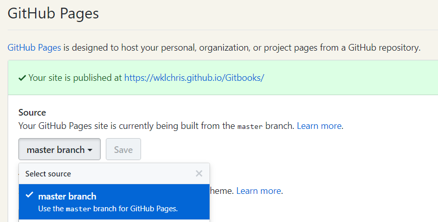

发布到网站
在完成你的 Gitbook 撰写后，你可以将其发布到网站上．通常有在 Gitbook 官网 和通过 Github Pages 服务进行发布两种途径．前者适用于不会操作 git 的用户，后者适用于能够使用 git 的书籍撰写者．
以上两种途径都是免费的，并且都可以说基于 Github 仓库的常规操作．笔者目前使用的第二种方式．
在 Gitbook 官网发布
这部分的操作非常简单，可以通过在 Gitbook 官网免费注册账号（或使用 Github 账号登陆）来完成初始设定．根据你的用户名 ID，你会自动分配一个个人的网址．比如用户名是 xxxx，那么我的 Gitbook 网址就是：
xxxx.gitbook.io
这也是用户默认拥有的组织（organizaion）；你可以在用户界面使用 Create an organization 按钮来新建其他的组织．
要上传你的 Gitbook 书籍，可以在组织下新建一个空间（space），然后点击 Edit 命令进行在线编辑——这甚至不需要懂得 git．当然，对于 Github 的用户来说，你可以将 Github 的仓库与 Gitbook 个人账户的某空间作整合（integration），这样你推送到仓库后在 Gitbook 个人空间这边也会自动更新．具体操作是：
- 进入你的空间，通常为每本书设定一个空间；
- 点击左下角的设置图标，展开左侧设置栏；
- 选择“Integrations”，然后选中“Github”，填入你的账号、仓库以进行设置；
- 等待 webhook 自动设置完成后，即可实现 push 自动更新的效果．
这种方式容易操作，但也有弊端：
- 每个 Github 仓库最好只储存一本书籍．理论上，Gitbook 网站会识别你仓库内的
book.json文件，以此完成书籍的生成．但是实测多书的体验并不好． - Markdown 书籍显示效果不理想．我没有测试利用构建命令（
gitbook build）直接生成静态网页的情形，但是直接使用 Markdown 文件，会发现书籍的章节顺序、排版细节都与本地gitbook serve时有出入．
因此，我建议能操作 git 的读者，使用构建命令构建 HTML 文件，然后用下面介绍的 Github Pages 方式实现．
利用 Github Pages 项目网页
Github Pages 的基础使用就不再多说了，一言以蔽之就是 {username}.github.io/{repo-name} 这种项目网址．要为你的 Github 某个仓库设置项目网页，请：
- 前往项目页面，点击“Settings”；
- 下拉找到“Github Pages”设置块（参考下图），可以选中 master 分支、docs 文件夹或者特殊的 gh-pages 分支作为源． 
- 保证源的根目录内有
index.html文件（或者README.md文件），这使得你的项目网址主页能够被访问． - 使用链接链接到你的书籍 HTML 主文件．比如本书，我设置了主分支作为源，本书在主分支的
CS/Gitbook/publish/路径下，主文件是前言文件（由书籍的README.md通过gitbook build构建1，默认生成名为index.html的网页），因此本书的前言网址：
稍了解 HTML 的朋友都知道，其中尾部的wklchris.github.io/{repo-name}/CS/Gitbook/publish/index.htmlindex.html通常省略．
然后，你要做的就是将书籍构建好，推送到你的在线仓库，再前往相应的页面访问来查看效果．
相比于前一种 Gitbook 官网发布的方式，本方法：
- 更加稳定可靠，但首次使用需要配置．
- 可能需要分支管理．如果你选择了 gh-pages 分支作为源，那么你至少需要懂得如何使用 git 进行分支管理．就算是是使用 master 分支的用户，分支管理也能让你更好地更新书籍（而不是用一堆 master 分支的 commit 来污染仓库的提交历史和那些关注你的用户）．
本章附注
1. 由于 Github Pages 似乎有下划线网址的支持问题（而 gitbook 又会默认将构建结果放在一个名为_book的文件夹中），我建议使用gitbook build {BookFolderName} {OutputFolderLocation}命令代替简单的gitbook build． ↩
举例来说，假如书籍文件夹名为 Book-one，普通构建命令是在其内部运行命令行（或 Bash）gitbook build；而笔者建议的命令需要在其上一级目录，输入形如：gitbook build Book-one Book-one/publish，就能将静态 HTML 书籍构建在 publish 文件夹中．读者可以通过 CMD 脚本完成这一工作，可以参考本书的做法：抛砖引玉．